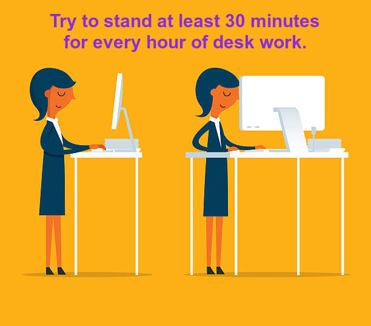

Get Up and Move
_HOME
_How To
_Dangers
_Pain_
_Orientation
_Questionnaire
_Proper Standing_
_Meditation_
How much standing time per hour should one aspire to when at their desk?
Click on one of the following choices
Five minutes per hour
10 minutes per hour
30 minutes per hour
All the time
